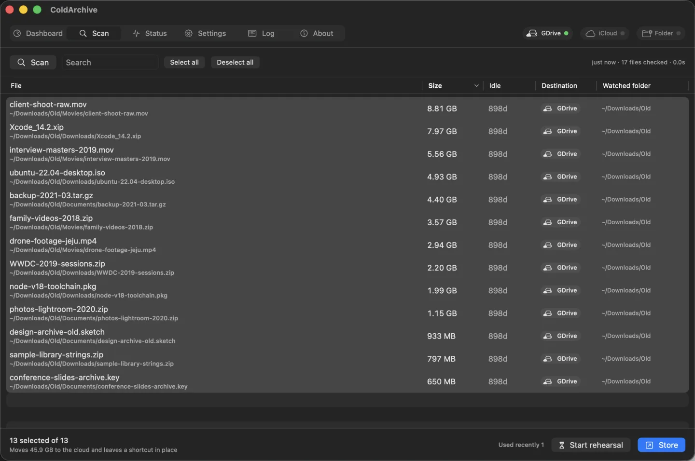
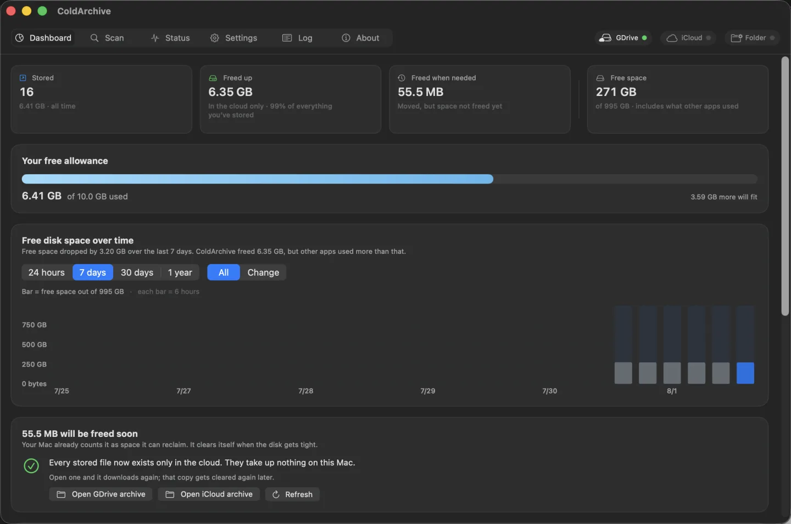
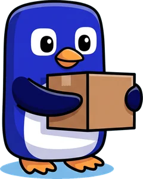

Was du brauchst, bleibt auf dem Mac. Was du nicht brauchst, wandert in deine Cloud oder auf eine externe Platte. Zu sehen ist davon nichts — nur der Platz ist wieder da.
„1 TB MacBook und trotzdem fast voll. Ich will alte Dateien auf eine externe Platte — gibt es dafür keinen einfachen Weg?“
— Eine echte Frage aus einem Mac-Forum. Jede Antwort lautete: „Verschieb sie halt selbst.“
Löschen traust du dich nicht, Verschieben zerlegt die Ordnerstruktur. Und ein halbes Jahr später weißt du nicht mehr, wo was liegt.
Du musst nichts löschen. Verschieb es — aber lass den Platz stehen, an dem es lag.
Gleiche Namen, gleiche Stellen. Die drei mit Raureif sind im Gefrierfach — protokoll.pdf, kürzlich benutzt, blieb unangetastet.
Sag mir einfach, wofür ein Ordner da ist — Tage und Megabyte trage ich ein. Ordner, die ich nie anfassen soll, bekommen „Auf dem Mac behalten“.
Keine Mockups. Die App, im Betrieb.


Fang mit dem an, was du sowieso schon hast. Beides funktioniert — nur der Zeitpunkt ist ein anderer.
Eine Kopie bleibt eine Weile liegen. macOS zählt sie aber längst als „Platz, den ich mir zurückholen kann“ — und holt ihn sich, sobald es eng wird.
Die Datei verlässt den Mac physisch. Der Platz ist im selben Moment wieder da.

Mit externer Platte oder NAS bekommst du exakt das Erlebnis der iPhone-Fotos — Platz in der Sekunde, in der die Datei umzieht.
Der Pinguin wohnt in deiner Menüleiste, und das Eis unter ihm ist dein freier Speicher. Eine Prozentzahl nimmst du im Augenwinkel nicht wahr. Brechendes Eis schon.
Ruhige CPU, gemütliches Watscheln. Ausgelastete CPU, kurze schnelle Schritte. Wie sehr dein Mac schuftet, siehst du nebenbei — ganz ohne Zahlen.
Die Farbe im Hintergrund folgt der Uhrzeit. Vor Sonnenaufgang Sterne und Mond, mittags hell, abends wieder dunkel. Dafür liest er den Kalender, nicht das Internet.
Standardmäßig ist es nur die Jahreszeit — dafür braucht es kein Internet. Trägst du eine Stadt ein, wird echtes Wetter daraus, geholt von einem winzigen Helfer, der deine Dateien nicht sehen kann. Nie von der App selbst.
Alle drei sind echte Frames aus der App. Nur das Abspieltempo ist für die Seite angepasst.
Im Archivordner liegt ein Wiederherstellungs-Skript. Doppelklick, und alles wandert zurück — ohne App, ohne Internet, nicht mal der ursprüngliche Mac wird gebraucht.
Schalte „Probelauf“ ein, und es beobachtet nur, ohne etwas zu bewegen. Wird eine Datei auch nur einmal benutzt, fliegt sie von der Liste.
Dateien in Git-Repositories, versteckte Dateien und jeder Ordner, den du ausschließt, waren nie Kandidaten.
Deshalb kannst du es nachts laufen lassen. Morgens schaust du drüber.
Diese App hat gar keine Berechtigung, ins Internet zu gehen. Statt „vertrau mir“ bekommst du den Weg, es nachzuprüfen.
codesign -d --entitlements - /Applications/ColdArchive.appZu sehen sind Dateirechte und die Sandbox. Kein Netzwerk-Entitlement. Das Hochladen übernimmt die Google-Drive- oder iCloud-App, die ohnehin läuft. Zusatzfunktionen mit Internetbedarf — etwa der Wetterhintergrund — übernimmt ein kleiner, separat installierter Helfer, und der darf im Gegenzug keine Dateien sehen.
Für diese Seite gilt dasselbe. Kein einziges externes Skript.
Dinge, die dir fairerweise vor dem Kauf gesagt gehören.
iCloud-Fotos und „Mac-Speicher optimieren“ arbeiten seit Jahren nach diesem Prinzip. ColdArchive weitet es sicher auf jeden Ordner und jede Cloud aus.
Abgelegte Dateien haben längst eine Kopie in der Cloud (oder auf deiner Platte). Sichert Time Machine sie noch einmal, füllt sich dein Backup-Medium doppelt so schnell. Schlimmer noch: Zum Lesen lädt das Backup alles aus der Cloud zurück — und der eben gewonnene Platz ist wieder weg.
Deshalb wird das Archiv automatisch von Time Machine ausgenommen. Du musst nichts tun.
Umgekehrt: Gibt es Dateien, die Time Machine sehr wohl behalten soll, gib dem Ordner „Auf dem Mac behalten“. Selbst wenn der übergeordnete Ordner überwacht wird, bleibt dieser außen vor.
macOS 15 oder neuer · Apple Silicon und Intel.
Dauerlizenz · einmalig zahlen · kein Konto
Zum Start 20 % unter dem regulären Preis.
Familienlizenz (3 Macs) 23,99 $ 29,99 $